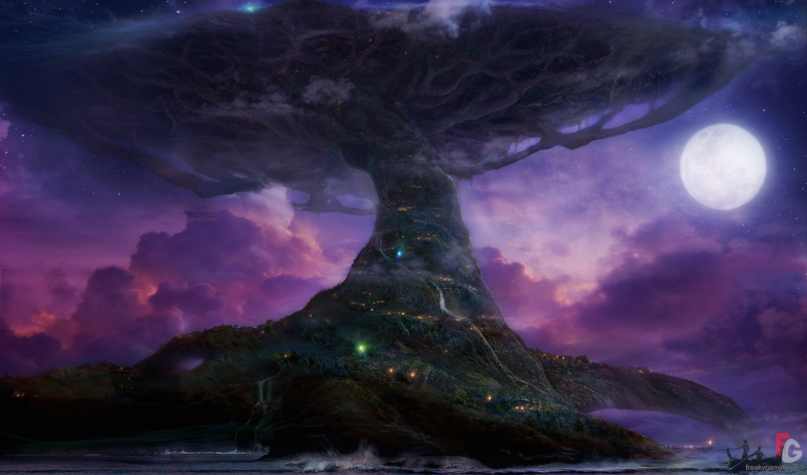

back
Llanossa

Llanossa is more than a city, it is a community of small elven tribe brought together under the guidance of an elder. Those tribes all live inside and around what they call Llanossa, or "The Life Tree", it is an enourmous tree that house all the communal elves. It is said that the tree has been standing for millenium and that it is the heart of the forest.
The Wood Elves of Metzan are not very interested in trade or politics, they only care about the nature surrounding them and they swear to protect the forest at all cost, there is not much adventuring opportunities or trading to be had in Llanossa because of this.